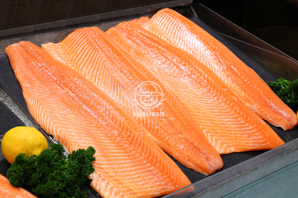
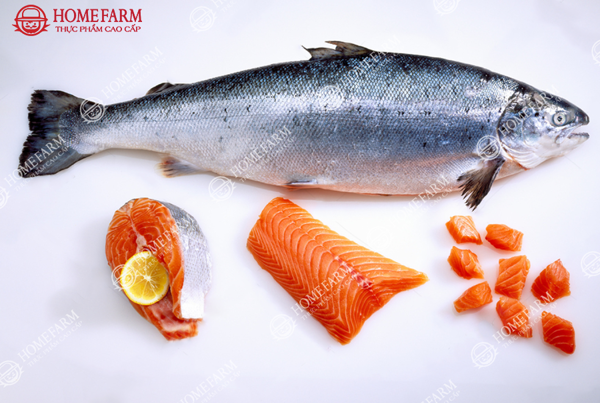

Thực phẩm nhập khẩu
Danh sách sản phẩm

Chi tiết
- Thông tin sản phẩm: Cá Hồi tươi nhập khẩu
- Xuất xứ: Nauy, Úc
- Quy cách đóng gói: bán theo lạng, cắt thái sashimi, theo miếng.
- Chế biến: Làm sashimi cá hồi, sushi, gỏi, cá hồi nướng, ruốc, áp chảo, rán…

Chi tiết
- Thông tin sản phẩm: Cá Hồi tươi nhập khẩu
- Xuất xứ: Nauy, Úc
- Trọng lượng: 5 - 7 Kg/con
- Bảo quản: Trong thùng xốp có đá lạnh, nhiệt độ -2 - 2 độ C